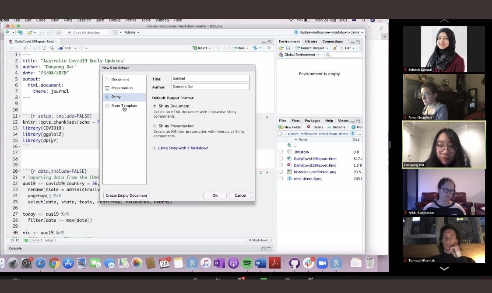

International Day of Women in Statistics and Data Science
üë©ü誂Äçüíª Danyang Dai @ Monash University
- rladiesmelbourne@gmail.com
- @RLadiesMelb
- github.com/R-LadiesMelbourne
- https://rladiesmelbourne-inc.netlify.app
11th October 2022 EBS Brown Bag Session
Who are we?
Who are we?
We are a registered non-profit organization and a local chapter of R-Ladies Global. Our aim is to promote gender diversity in the R community, both in Australia and worldwide. We are proudly a community of over 2200 members!
R-Ladies Melbourne Inc welcomes members of all R proficiency levels, whether you’re a new or aspiring R user, or an experienced R programmer interested in mentoring, networking & expert upskilling. Our community is designed to develop our members’ R skills & knowledge through social, collaborative learning & sharing.
What do we do?
What do we do?

What do we do?

What do we do?
And more…
- Past event: 75
- Total members: 2226

Come to our next event this Thursday!
Be part of R-ladies Melbourne
Join the committee: make decisions about the future of R-Ladies Melbourne
You must identify as a woman or other underrepresented genders
Joint the Volunteer team: to help us with setting up successful events
Open to everyone so you can show your support to R-Ladies Melbourne
Sex vs Gender in survey
Sex vs Gender in survey
- Sex refers to the chromosomal, gonadal and anatomical characteristics associated with biological sex. Individuals may have a range of circumstances or undergo a variety of treatments that make it difficult to define a true biological sex.
- Gender is part of a person’s social and personal identity. It refers to each person’s deeply felt internal and individual identity and the way a person presents and is recognised within the community.
- A person’s sex and gender may not necessarily be the same
Sex vs Gender in survey
- Woman
- Man
- Non-binary / gender diverse
- My gender identity isn’t listed. I identify as:
- Prefer not to say
Sex vs Gender in survey
- Woman
- Man
- Non-binary / gender diverse
- My gender identity isn’t listed. I identify as:
- Prefer not to say
R-Ladies
- R-LADIES IS A WORLDWIDE ORGANIZATION WHOSE MISSION IS TO PROMOTE GENDER DIVERSITY IN THE R COMMUNITY.
- The R community suffers from an underrepresentation of minority genders (including but not limited to cis/trans women, trans men, non-binary, genderqueer, agender) in every role and area of participation, whether as leaders, package developers, conference speakers, conference participants, educators, or users.
R-Ladies ?
- Barrier?
- How can we be more inclusive for minority gender?
Reference
The slides are made using Quarto with Emi Tanaka’s CSS design.
Slides can be found at DanyangDai/brownbag_2022_10_11
More information about gender data collection: CAPTURING GENDER DATA INCLUSIVELY - Monash
THANK YOU!